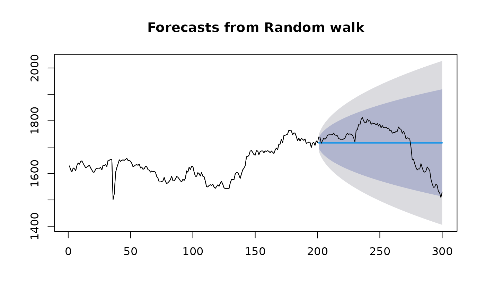

Returns range of summary measures of the forecast accuracy. If x is
provided, the function measures test set forecast accuracy
based on x-f. If x is not provided, the function only produces
training set accuracy measures of the forecasts based on
f["x"]-fitted(f). All measures are defined and discussed in Hyndman
and Koehler (2006).
Usage
# Default S3 method
accuracy(object, x, test = NULL, d = NULL, D = NULL, f = NULL, ...)Arguments
- object
An object of class “
forecast”, or a numerical vector containing forecasts. It will also work withArima,etsandlmobjects ifxis omitted – in which case training set accuracy measures are returned.- x
An optional numerical vector containing actual values of the same length as object, or a time series overlapping with the times of
f.- test
Indicator of which elements of
xandfto test. IftestisNULL, all elements are used. Otherwise test is a numeric vector containing the indices of the elements to use in the test.- d
An integer indicating the number of lag-1 differences to be used for the denominator in MASE calculation. Default value is 1 for non-seasonal series and 0 for seasonal series.
- D
An integer indicating the number of seasonal differences to be used for the denominator in MASE calculation. Default value is 0 for non-seasonal series and 1 for seasonal series.
- f
Deprecated. Please use
objectinstead.- ...
Additional arguments depending on the specific method.
Details
The measures calculated are:
ME: Mean Error
RMSE: Root Mean Squared Error
MAE: Mean Absolute Error
MPE: Mean Percentage Error
MAPE: Mean Absolute Percentage Error
MASE: Mean Absolute Scaled Error
ACF1: Autocorrelation of errors at lag 1.
By default, the MASE calculation is scaled using MAE of training set naive
forecasts for non-seasonal time series, training set seasonal naive forecasts
for seasonal time series and training set mean forecasts for non-time series data.
If f is a numerical vector rather than a forecast object, the MASE
will not be returned as the training data will not be available.
See Hyndman and Koehler (2006) and Hyndman and Athanasopoulos (2014, Section 2.5) for further details.
References
Hyndman, R.J. and Koehler, A.B. (2006) "Another look at measures of forecast accuracy". International Journal of Forecasting, 22(4), 679-688.
Hyndman, R.J. and Athanasopoulos, G. (2018) "Forecasting: principles and practice", 2nd ed., OTexts, Melbourne, Australia. Section 3.4 "Evaluating forecast accuracy". https://otexts.com/fpp2/accuracy.html.
Examples
fit1 <- rwf(EuStockMarkets[1:200, 1], h = 100)
fit2 <- meanf(EuStockMarkets[1:200, 1], h = 100)
accuracy(fit1)
#> ME RMSE MAE MPE MAPE MASE ACF1
#> Training set 0.4393467 15.8461 8.959648 0.02128535 0.5533582 1 -0.007760885
accuracy(fit2)
#> ME RMSE MAE MPE MAPE MASE
#> Training set 6.24991e-14 57.83723 46.98108 -0.1240662 2.865357 5.24363
#> ACF1
#> Training set 0.9574449
accuracy(fit1, EuStockMarkets[201:300, 1])
#> ME RMSE MAE MPE MAPE MASE
#> Training set 0.4393467 15.8461 8.959648 0.02128535 0.5533582 1.00000
#> Test set 0.8900000 78.1811 63.311200 -0.16763307 3.7897316 7.06626
#> ACF1
#> Training set -0.007760885
#> Test set NA
accuracy(fit2, EuStockMarkets[201:300, 1])
#> ME RMSE MAE MPE MAPE MASE
#> Training set 6.249910e-14 57.83723 46.98108 -0.1240662 2.865357 5.24363
#> Test set 8.429485e+01 114.96571 105.65361 4.7004265 6.075968 11.79216
#> ACF1
#> Training set 0.9574449
#> Test set NA
plot(fit1)
lines(EuStockMarkets[1:300, 1])
